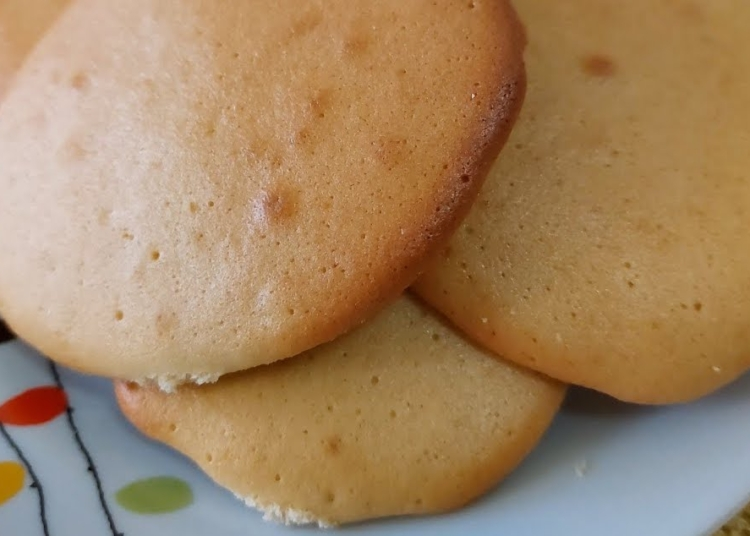

Doces · Biscoitos
Esquecidos

Ingredientes
- 1½ xícara de açúcar
- 4 gemas
- 1 clara
- 4 xícaras de farinha de trigo
- pitada de sal
- 1 colher (sopa) de água
- manteiga e farinha para untar e polvilhar
Modo de preparo
- Preaqueça forno médio (180 °C). Bata açúcar e gemas até creme esbranquiçado.
- Junte a clara e bata mais 5 minutos.
- Incorpore farinha e sal com as mãos até massa enrolável (água se precisar).
- Faça bolinhas em duas assadeiras untadas e polvilhadas. Asse 25 minutos. Esfrie e congele.
Observação
Rendimento: 50 a 60 biscoitos. Polvilhe as mãos com farinha ao enrolar. Descongelamento: 1 hora e 6 minutos no forno.